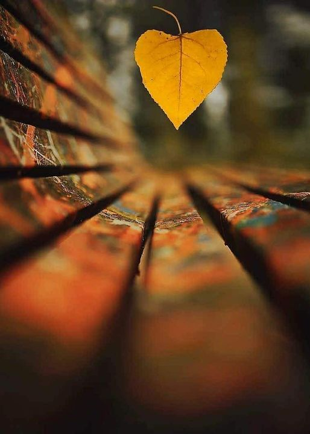
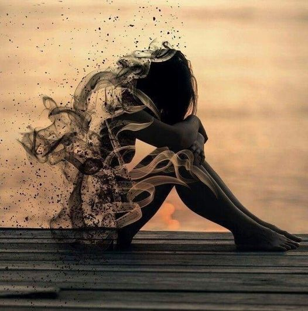
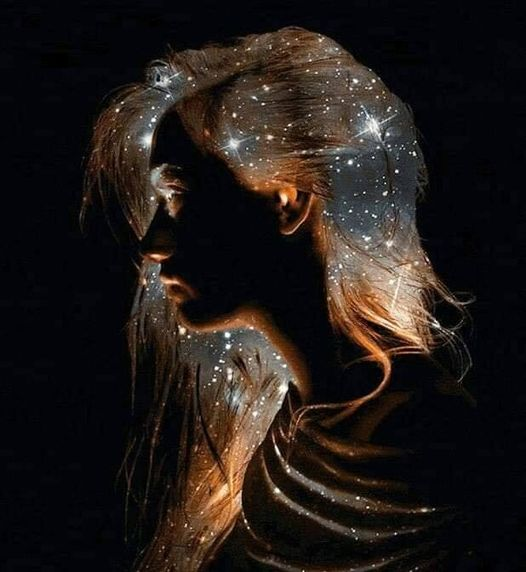

"LA NOCHE"
En medio de la noche
donde las palabras sobran
un inventario de recuerdos
al final de una dulce melodia
sentada en segunda fila
viendo el cartel de una historia
sin luna, sin sol, sin locura...
Alas al viento, en sueños
cociendo al tiempo hoy
escapando del corazón
cada madrugada darás
la espalda al sol a temores
a un pedazo de cielo
lleno de hojas secas
impregnadas de amor.....
Lillys...

NO CREÌ..
No creí... Sin querer llegó
abriéndome el alma
al cerrar los ojos no lo vi
apareció donde nadie buscaba
creo que el universo ayudó
al dejarnos tan cerquita
del destino que nos acercó. <
Al parecer el corazón
tomó la dirección mirando atras
a lado del camino del amor
al filo de la soledad, de tu corazón
de las promesas que confabularon
con el universo y nuestras almas
abrazándo la sombra del pasado
un mundo de color en mi interior
congelado las mañanas, las historias
buscando un sueño contigo...
Lillys....

DESTINO..💓....
No es una simple coincidencia
es el objetivo de despertar o de sanar
de encontrarme a mi mismo
en alguien más, en la oscuridad
podría ser una complicidad
que sale por los poros y extremece
cada centímetro de la piel....
Un deseo profundo, un sueño
o simplemente encontrar la vida
con el alma entrelazada en las manos
levantando los sentidos dejándolos correr
revoloteando el mundo y tambaleando el especio...
No sabemos si será un momento
pero si te ha erizado lo más profundo
y a seducido tu mente.. Será imborrable
cuando dos almas se encuentran
simplemente se dejan ir, se siente profunda,
con la certeza que te esta cambiando
puede que dure una vida, puede que dure
un instante pero no lo quieres dejar ir
tú no elegiste el momento
lo eligió el destino......
Pero tu eliges vivir o correr...
LOD..
SUEÑOS COMPARTIDOS
Mientras miras el cielo
hojas secas van cayendo
viendo pasar el otoño de la vida
el invierno alberga el corazón
acompañando las despedidas ....
La soledad esta en su lugar
dibujando noche tras noche
sentimientos con cada palpitar
amándo en la oscuridad..
Magia en medio de lágrimas
llegando al mar convirtiendo
lluvia sin agua que inunda razones
en gotas de agua clara que refleja
un sueño de amor... Más que amor ....
Días de lluvia.. Días de soledad...
Mariposas libres en un vendaval
luna esperando bailar con el sol
dibujando una sonrisa en el alma
uniendo cuerpos en la oscuridad....
Lillyoblis...

AL CERRAR MIS OJOS
Desearía que fueras tú la última persona
que vea al cerrar mis ojos y decir
lo mucho que te amé ...
Que jamás te pude regalar mis besos
y tantas caricias que por años
deseé ceder un sentimiento
que mi corazón pudo ofrecer. "AMOR".
Que para sentir tenía que abrazar el viento
discurrendo tan esquivo y natural
que a veces envolvía en remolino
dejando caer de forma dulce que puedo ofrecer.
Que tus besos de miel eran mi perfecto
despertar y un susurro al cerrar mis ojos
para dejarme soñar con aquel deseo que
me hizo amar de forma irreal.
 SUEÑOS COMPARTIDOS
SUEÑOS COMPARTIDOS